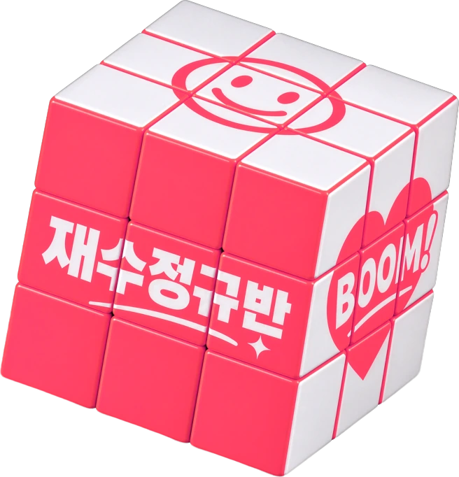
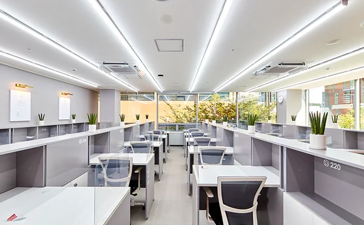
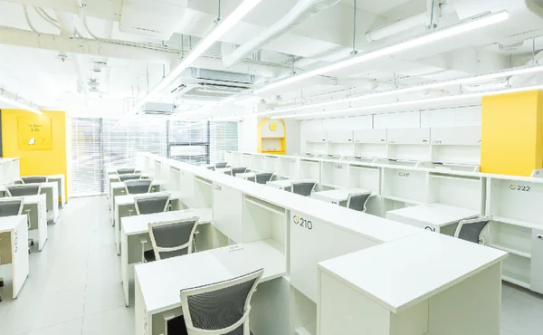
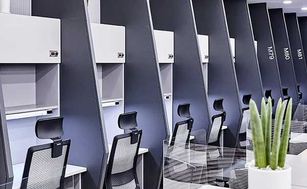
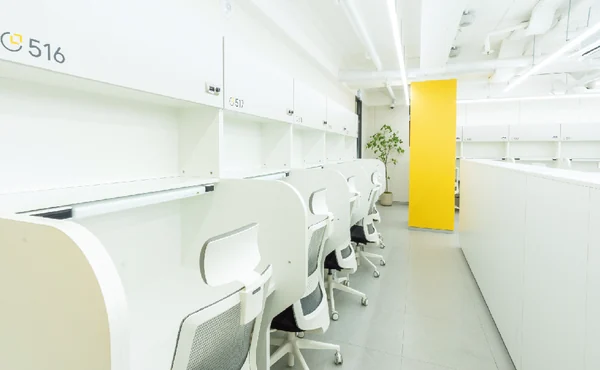
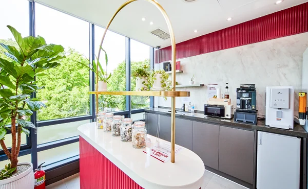
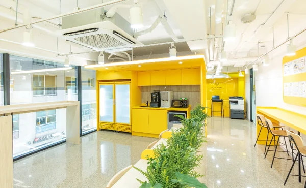
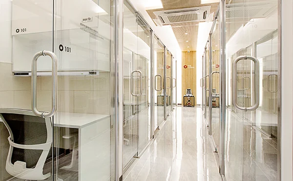
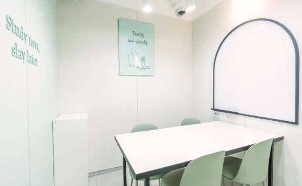
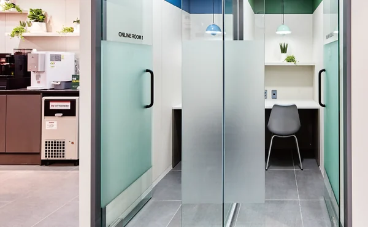

누적된 몰입공부 시간, 합격으로 BOOM!
2028학년도 통학 재수정규반
- 모집 대상
- 2028학년도 N수생 / 검정고시생
- 접수 방법
- 온라인 사전 예약 (추후 방문 결제)
- 입학일
- 2027.02.15(월) ~


BENEFIT
2028 준비,
나에게 맞는 혜택으로 시작하세요
아래 혜택 중 1가지만 적용됩니다
-
혜택 1 기간 내 결제 및 등원 시
정규패스 최대 15% 할인
2027.02.15(월) ~ 2027.04.13(화) 기간 내
2개월 결제 및 등원 완료 시 -
2028 잇올 장학 자세히 보기 (새 창)
혜택 2 성적·내신·합격 대학 기준 충족 시
2028 잇올 장학
최대 월 수강료 100% 지원*
-
혜택 3 3개월 이상 결제 시
잇올패스
셋 중 택1
* 최대 100% 지원: 매월 10만 원 결제 후, 환급 조건 충족 시
10만 원 환급 (30일 기준)
- ※혜택 1(정규패스), 혜택 2(잇올 장학), 혜택 3(잇올패스)는 타 프로모션 및 혜택과 중복 적용되지 않으며, 세 가지 혜택 중 하나만 선택하여 적용받을 수 있습니다.
- ※정규패스는 2027년 2월 15일부터 4월 13일까지 2개월분을 일괄 결제 후 이용하는 경우에 한해 적용됩니다.
- ※정규패스의 할인율은 센터/캠프별로 상이하므로, 대상 센터/캠프 목록을 확인 바랍니다.
- ※기존 재수우선선발반 재원생도 재수정규반으로 연장 등록하는 경우 정규패스 혜택을 받을 수 있습니다.
- ※잇올 장학은 장학 유형별로 신청 기간 및 자격 조건이 상이하므로, '자세히 보기'를 통해 상세 유의사항을 확인 바랍니다.
- ※잇올 장학 대상자로 선정된 경우, 장학 적용일 전까지는 사전 결제 금액을 기준으로 이용 기간에 따라 일할 계산 후 재결제하며, 장학 적용일부터는 장학 혜택이 반영된 수강료가 적용됩니다.
- ※잇올패스는 3개월 이상 잇올 장기 결제 시 인강 환급패스·인강 무료패스·콘텐츠패스 중 하나를 선택할 수 있습니다.
각 패스별 세부 조건은 해당 유의사항을 확인 바랍니다. - ※상담 예약 순서대로 대기자 등록이 진행되며, 좌석·프로모션·장학 모두 센터/캠프 운영 상황에 따라 조기 마감될 수 있습니다.
CHECK
처음 치르는 2028 수능,
이런 걱정 있으신가요?
-
화작만 공부해서 문법이 막막하다
-
미적분·기하를 공부했는데, 확률과 통계까지
새로 해야 한다 -
통합사회·통합과학, 수업 없이 혼자 해도
될지 걱정된다 -
혼자 공부하다 학습 계획이 무너지거나 공부
시간이 부족해질까 걱정된다 -
달라지는 대학별 전형에 맞춰 지원 전략을
어떻게 세워야 할지 모르겠다
하나라도 해당된다면, 혼자 고민하지 마세요!
변화마다 준비된 답, 지금 잇올에서 시작하세요
READY
변화는 예고됐고,
잇올은 준비했습니다
-
CHANGE 01
달라진 학습 범위
자세히 보기 (READY 01 관리)READY 01
관리
학습 공백부터
몰입 관리까지,
세 명의 담임과 함께 -
CHANGE 02
통합형 수능 최초 시행
자세히 보기 (READY 02 학습 지원)READY 02
학습 지원
필요한 강의와
실전 콘텐츠로,
내 페이스대로 충분하게 -
CHANGE 03
달라지는 대입 전형
자세히 보기 (READY 03 입시전략)READY 03
입시전략
입시 데이터와
입시콘서트로,
변화에 맞는 지원 전략까지
READY 01 · 3중 담임제
2028 입시,
세 명의 담임이 함께합니다
1 학생 : 3 담임
2028 입시 대비 강화
-
생활 코치
2028 입시 교육을 받은
생활 코치가 기존
출결·순찰
상시 점검에
더해 공부 습관부터
순공 시간까지 밀착 관리 -
전문 교과 코치
1:1 맞춤 교과 상담에
더해, 2028 공통과목
전환에 따른 학습 공백을
진단하고 필요한
학습 방향 제시예) 미적·기하 출신 확통 공백 체크
-
입시 소장
수능과 대학별 전형을
분석하고, 2028 입시
변화까지
반영한
N수생 맞춤 입시 전략 제시
READY 02 · 학습 지원
달라진 수능에도,
내 페이스대로 공부할 수 있도록
필요한 강의부터 실전 콘텐츠, 질문 해결까지.
나에게 맞는 학습을 잇올이 지원합니다.
-
인강패스
LEARN
필요한 강의는 직접 선택하고,
인강비 부담은 가볍게인강 환급 또는 무료 제공
-
실전 콘텐츠
PRACTICE
실전 콘텐츠 자세히 보기 (새 창)부족한 부분은 채우고,
실전 감각은 탄탄하게더프·서프 등 잇올 공식 모의고사부터
각종 N제까지,
잇올 팔레트에서 한 번에 -
실전바이오리듬
ADAPT
혼자 공부해도,
수능 당일의 리듬까지 익숙하게실제 수능 흐름에 맞춘 하루 훈련
READY 03 · 입시전략
입시 데이터와 입시콘서트로
전형 변화부터 지원 전략까지
짚어 드립니다
-
빅데이터 입시 분석
누적 100만 명*의 입시 데이터를
바탕으로, 달라진 전형에서
나의 지원 방향을 점검합니다. -
입시콘서트
2028 입시의 주요 변화부터
시즌별 준비 전략까지,
중요한
정보를 놓치지 않도록
안내합니다. -
2028 입시 정보
통합형 수능부터 대학별 전형
변화까지, 알아야 할 입시 정보를
한곳에서 확인합니다.

- * 100만 명: 2017년 1월 ~ 2025년 3월 누적 기준
- ※ 학습 및 입시 서비스는 합격전략 연구소 '잇올 랩'에서 제공됩니다.
- ※ 시기에 따라 프로그램 내용은 상이할 수 있습니다.
RESULT & REVIEW
잇올의 준비,
이미 결과로 증명했습니다
-
31%
잇올에서는
메디컬 명문대
31% 합격 -
12%
2026학년도
전국 의대 정원
12%가 잇올 출신
- 메디컬 명문대 31% 합격: 2026학년도
합격수(12,211) 대비 메디컬 명문대 합격수(3,767)
비율(소수점 첫째자리
반올림) - 의대 정원 12% 잇올 출신: 2026학년도 의대 정원(3,123) 대비 잇올 의대 합격증 수(371) 비율(소수점
첫째자리
반올림) - 명문대 기준: 서울대, 연세대(서울), 고려대(서울), KAIST, POSTECH, 서강대, 성균관대, 한양대(서울), 이대, 각
과기원(KENTECH 포함), 각 사관학교, 각 교대, 경찰대 - 최종 업데이트 : 2026년 4월 5일 기준
2026 잇올 MVP 합격 인터뷰
잇올을 선택한
합격생들의 이야기
-
잇올 시간표로 충분히 채운
몰입공부 시간2026 수능 등급
정시·재수
- 국어
- 1
- 수학
- 1
- 영어
- 2
- 탐구1
- 1
- 탐구2
- 1
주요 합격 대학
서울대 의예과·가톨릭대 의예과·
단국대(천안) 의예과혼자 공부하는 게 편해서 자습시간을 충분히
확보할 수 있는 잇올을 선택했습니다.엄격한 시간 관리와 정해진 시간표 덕분에 매일
꾸준히 공부할 수 있었고, 정기적인 모의고사와
잇올 팔레트의 다양한 학습 콘텐츠들도 도움이
됐습니다. -
규칙적인 생활에서
시작한 흔들림 없는 집중2026 수능 등급
정시·재수
- 국어
- 1
- 수학
- 1
- 영어
- 1
- 탐구1
- 1
- 탐구2
- 1
주요 합격 대학
고려대 의과대학·중앙대 의학부·
순천향대 의예과체계적인 관리와 공부에 집중하기 좋은 학습 환경 때문에 잇올을 선택했습니다.
철저한 출결 관리로 생활 리듬을 유지하고 충분한 수면을 확보하면서, 부족한 부분을 찾아
보완하는 데 집중했습니다. -
공부할 때는 집중하고,
쉴 때는 충분히 쉬는 생활2026 수능 등급
정시·재수
- 국어
- 1
- 수학
- 1
- 영어
- 2
- 탐구1
- 1
- 탐구2
- 1
주요 합격 대학
가톨릭대 의예과·중앙대 의학부
많은 수업을 듣기보다 자기주도학습 시간을
충분히 확보하는 것이 중요하다고 생각해 잇올을
선택했습니다.집중하기 좋은 면학 분위기 덕분에 공부에 몰입할 수 있었고, 주말에는 충분한 휴식으로 재충전하며 꾸준히 공부했습니다.
잘 갖춰진 장학제도도 재수 생활의 경제적 부담을 덜어주는 데 큰 도움이 됐습니다.
-
지각 없이 꾸준히 지킨
나만의 공부 약속2026 수능 등급
정시·재수
- 국어
- 1
- 수학
- 1
- 영어
- 2
- 탐구1
- 1
- 탐구2
- 1
주요 합격 대학
가톨릭대 의예과·단국대(천안) 의예과
재수를 시작하며 지각하거나 조퇴하지 말자는
나만의 작은 목표를 세웠습니다.규칙적으로 공부할 수 있는 잇올 환경이 좋았고,
주말에도 늦게까지 공부할 수 있었습니다.잇올 공식 모의고사 실시와 이후 전국 잇올 학생
대상 등수(빌보드)도 동기부여가 됐습니다. -
내 공부는 내 방식대로,
실전 준비는 체계적으로2026 수능 등급
정시·N수
- 국어
- 1
- 수학
- 1
- 영어
- 1
- 탐구1
- 1
- 탐구2
- 1
주요 합격 대학
부산대 의예과·인제대 의예과·
가톨릭관동대 의학과·KAIST제 계획대로 자율적으로 공부하면서도 모의고사로 부족한 부분을 점검할 수 있어 좋았습니다.
수능 시간표에 맞춘 실전바이오리듬,
실제 학교에서 모의고사를 볼 수 있는
학교프로젝트가 실전 감각을 기르는 데 도움이
됐습니다. -
흐트러질 때마다 다시 잡아준
공부의 리듬2026 수능 등급
정시·N수
- 국어
- 1
- 수학
- 1
- 영어
- 1
- 탐구1
- 1
- 탐구2
- 1
주요 합격 대학
전남대 의학과·순천향대 의예과
군 전역 후 다시 공부를 시작하면서 약해진 의지가 걱정돼 잇올을 선택했습니다.
휴대폰·졸음·소음 관리가 공부에 집중하는 데
도움이 됐고, 선생님과 멘토의 질의응답을 통해
다양한 풀이 관점을 배울 수 있었습니다. -
생활부터 학습, 입시까지
든든했던 관리2026 수능 등급
수시·N수
- 국어
- 1
- 수학
- 1
- 영어
- 2
- 탐구1
- 2
- 탐구2
- 2
주요 합격 대학
동국대(WISE) 의예과·경북대 치의예과·
대구한의대 한의예과규칙적인 생활 관리를 받으면서도 원하는 공부를 주체적으로 할 수 있어 잇올을 선택했습니다.
생활 관리 선생님들의 점검과 교과 선생님들의
학습 피드백, 입시 담당 선생님의 원서 지원이
도움이 됐습니다. -
긴 자습시간에 쌓아 올린
나만의 실전 경쟁력2026 수능 등급
정시·N수
- 국어
- 1
- 수학
- 1
- 영어
- 2
- 탐구1
- 2
- 탐구2
- 2
주요 합격 대학
고신대 의예과·서울대 수의예과·
건국대 수의예과여러 학원을 경험한 뒤 잇올의 가장 큰 장점은
충분한 공부량을 확보할 수 있다는 점이라고
느꼈습니다.인강과 다양한 콘텐츠로 학습하면서 생활 담임
선생님들의 세심한 졸음 관리 덕분에 집중할 수
있었습니다. -
방해 요소를 줄이고
공부량을 늘린 하루2026 수능 등급
정시·재수
- 국어
- 1
- 수학
- 1
- 영어
- 2
- 탐구1
- 1
- 탐구2
- 1
주요 합격 대학
서울대 항공우주공학과·연세대 전기전자공학부
아침부터 저녁까지 이어지는 공부시간이 공부량을 늘리는 데 도움이 됐습니다.
점심과 저녁에는 산책하며 리듬을 유지했고,
소음 등 집중을 방해하는 요소를 말씀드리면
관리자분들이 해결 방법을 찾아주셔서 좋았습니다.
* 해당 내용은 실제 잇올 재원생 합격 후기 중 일부를 발췌, 편집한 내용입니다.
SPACE
몰입이 쌓이는 곳,
공간부터 다릅니다
시설 사진 01/ 09

스파르타교실형
몰입관교실형
스파르타독서실형
몰입관교실형
스파르타공용공간
몰입관공용공간
통유리 1인실
상담실
온라인 룸
-
01교실형
-
02독서실형
-
03공용공간
SYSTEM
전국 직영으로 표준화된
몰입공부 시스템
-
-
출결관리
등하원부터 학습 시간까지, 잇올 앱을 통한 관리
-
휴대폰관리
입실부터 퇴실까지 의무 제출
-
학습 외 사이트 차단
유튜브·SNS 차단 등 철저한 네트워크 관리
-
졸음·소음·친목관리
관리자 정기 순찰로 졸음·소음·친목 상시 감독
-
식사 자세히 보기 (새 창)
식사관리
검증된 식사 업체와 제휴
-
올클 자세히 보기 (새 창)
환경관리
잇올 클린테크 연구소 ‘올클’ 상시 관리
-
-
-
학습전략 코칭
학습역량 진단부터 스트레스 케어까지,
데이터로 설계하는 나만의 학습 전략 -
3중 담임제
생활 코치, 전문 교과 코치, 입시 소장의
3중 담임으로 함께 관리 -
실전바이오리듬
변경된 2028학년도 수능 시간표에 맞춰
먼저 적응하는 프로그램 -
학교프로젝트
실제 학교에서 미리 경험하는 대규모 수능 실전 시뮬레이션
(주관 엔컴 | 후원 잇올) -
콘텐츠 자세히 보기 (새 창)
콘텐츠
강대K, 강대X, 더프, 서프, 이감, 상상 등
다양한 콘텐츠 제공
-
-
-
입시전략 컨설팅
데이터 기반 1:1 컨설팅으로 합격 로드맵 설계
-
빅데이터 입시 분석
학과별 입결 데이터 분석부터
배치표·계산기·시크릿코드 등 다양한 TOOL 제공 -
입시콘서트
시즌별 전국 단위 입시 설명회 &
센터/캠프 단위 입시 간담회 진행 -
2028 입시 정보 자세히 보기 (새 창)
2028 입시 정보 안내
5등급제·통합형 수능 등 새로워진
2028 입시 변화, 빠짐없이 업데이트
- ※ 시기에 따라 프로그램 내용은 상이할 수 있습니다.
- ※ 학습 및 입시 서비스는 합격전략 연구소
'잇올 랩'에서 제공됩니다.
-
-
-
명상 멘탈강화훈련
학습 최적화 명상으로 집중력·학습 태도 강화
-
심리 코칭 서비스
위로에 그치지 않는 실전형 멘탈 코칭,
검증된 전문가가 1:1로 진행 -
뇌파 진단·훈련 프로그램
개인별 뇌파 진단 및 훈련 프로그램,
잇올 재원생 특별 혜택가 제공
- ※ 센터/캠프에 따라 프로그램 내용은 상이할 수 있습니다.
-
SERVICE
공부가 막히는 순간부터,
매일 기록되는 몰입의 순간까지
-
티처스리그
검증된 선생님이 답하는
리그형 학습 Q&A 플랫폼자세히 보기 — 티처스리그 (새 창)모르는 문제, 궁금한 순간
바로 묻고 해결하는 학습 Q&A리뷰로 쌓이는 리그 등급, 고난도 문제는
상위 리그 선생님이 답변지원자 2,850명 중 11%만 선발,
84%*가 메디컬·SKY 출신후기·공부 고민을 나누는
커뮤니티를 통해 함께 성장
* 84% : 2025년 10월 기준
-
잇올 생활기록부
쌓여가는 학습 기록,
학부모님과 함께 확인자세히 보기 — 잇올 생활기록부 (새 창)출결·생활·학습 데이터를 한눈에 확인하고
학습 과정을 체계적으로 기록매일의 출결과 생활 패턴을 살펴보며
학습 습관과 생활 리듬까지 점검몰입시간 리포트로 실제 공부 시간을 확인하고
학습 집중도와 루틴을 꼼꼼하게 점검학습·입시 상담 내역을 바탕으로
현재 상황에 맞는 맞춤 학습·입시 전략 수립
SCHOLARSHIP
몰입하는 만큼,
잇올이 채웁니다
-
잇올 장학 누적 수혜 인원 28만 명
* 2018년 01월 ~ 2026년 08월 기준
-
잇올 장학 누적 장학금 331억 원
* 2018년 01월 ~ 2026년 08월 기준